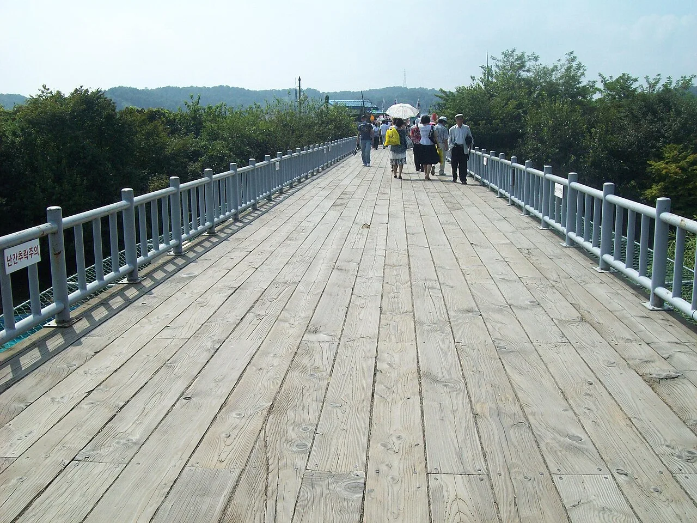
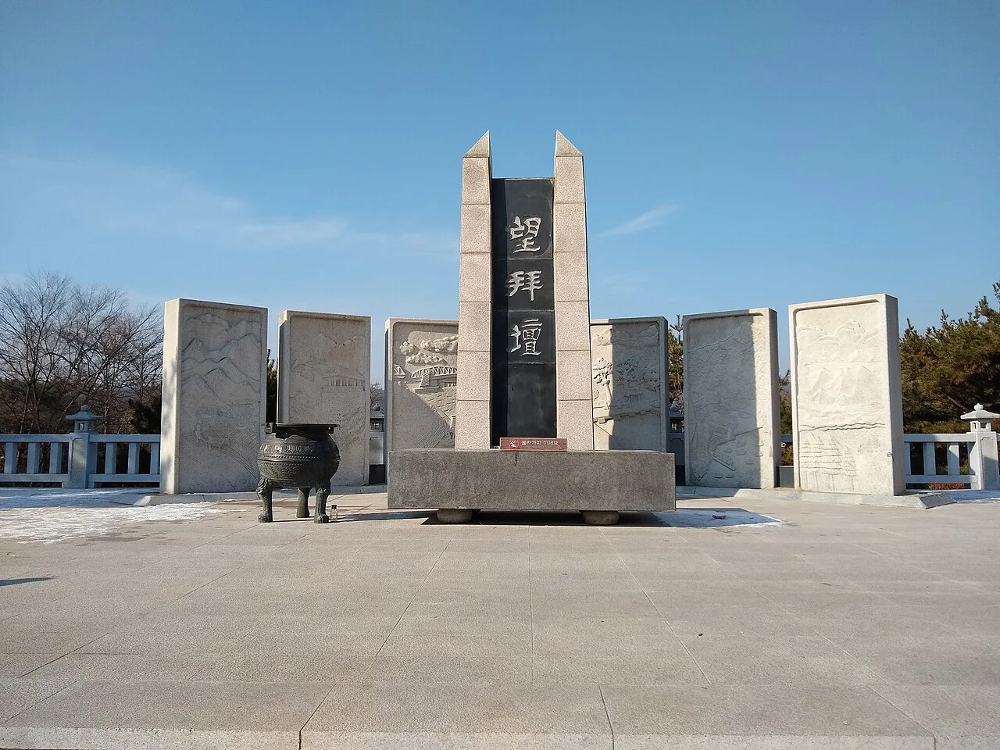
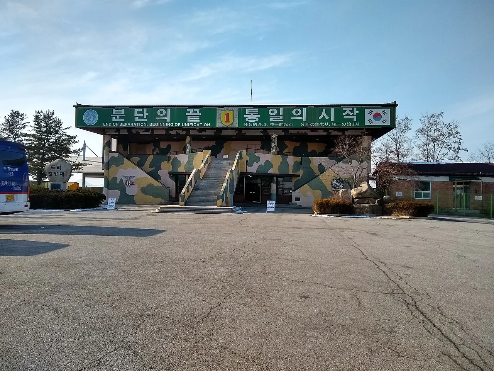

▲ 평화누리공원의 상징인 '바람의 언덕'. 수천 개의 바람개비가 임진강 바람에 쉼 없이 돈다
경기 파주시 문산읍, 임진강을 사이에 두고 북녘땅을 바라보는 임진각(臨津閣)은 서울에서 자유로를 타면 1시간 남짓이면 닿는 안보관광지다. 1972년 남북공동성명 이후 실향민을 위로하기 위해 조성된 이곳은 이제 3000개 넘는 바람개비가 도는 평화누리공원, 임진강을 곤돌라로 건너는 체험, 자유의다리·망배단 같은 분단의 기억, 그리고 예약을 해야 들어갈 수 있는 제3땅굴·도라전망대까지 한데 모인 복합 관광지가 됐다. 이 기사는 임진각에 처음 가는 사람이 헷갈리기 쉬운 순서 — 평화누리공원 → 평화곤돌라 → 자유의다리·망배단 → DMZ 투어 연계 — 대로, 2026년 기준 요금·예약 정보를 정리했다.
1. 평화누리공원·바람의 언덕 — 임진각의 첫인상
▲ 평화누리공원 바람의 언덕. 3000개가 넘는 바람개비가 설치된 이곳 일대가 공원의 상징 포토존이다 ⓒ 한국관광공사
임진각 주차장에서 다리를 건너면 가장 먼저 만나는 곳이 평화누리공원이다. 2005년 세계평화축전을 기념해 조성된 이 공원은 축구장 30개 넓이에 이르는 대형 잔디언덕과 그 위에 세워진 바람의 언덕 조형물로 유명하다. 바람이 잦은 임진강변 지형을 살려 색색의 바람개비 수천 개를 심어놓은 것으로, 날씨가 맑은 날이면 파란 하늘과 초록 언덕, 빨간 바람개비가 어우러져 사진 명소로 꼽힌다. 공원 곳곳에는 두 얼굴이 마주 보는 대형 조형물 등 평화를 주제로 한 설치미술도 흩어져 있어, 아이를 동반한 가족 단위 방문객이 산책 삼아 둘러보기 좋다.

▲ 평화누리공원 잔디밭에 설치된 대형 조형물. 공원 전체가 탁 트인 잔디언덕이라 아이들과 뛰어놀기도 좋다 ⓒ 한국관광공사
공원 안쪽 언덕 위에는 평화의 종(평화누리 종각)도 자리한다. 남북통일을 염원하는 뜻으로 세워진 종각으로, 정해진 시간에 타종 행사가 열리기도 한다. 임진각 광장에서 걸어서 10분 안팎이면 닿을 수 있어, 바람의 언덕과 함께 묶어 돌아보기 좋은 동선이다.

▲ 남북통일을 염원하며 세운 평화의 종. 평화누리공원 언덕 위 종각에 걸려 있다 ⓒ 한국관광공사
2. 임진각 평화곤돌라 — 임진강을 건너 DMZ 상공으로

▲ 임진각 평화곤돌라 승강장 카페에서 바라본 곤돌라 케이블. 임진강과 민간인통제구역 상공을 가로지른다 ⓒ 한국관광공사
2020년 개통한 임진각 평화곤돌라는 민간인통제구역(민통선)을 가로지르는 국내 최초의 곤돌라다. 임진각 승강장에서 임진강 건너 DMZ 전망대 승강장까지 약 850m 구간을 편도로 오가며, 발아래로 임진강과 철책, 민통선 안쪽 들판이 펼쳐지는 독특한 풍경을 볼 수 있다. 일반 캐빈 외에 바닥이 투명한 크리스탈 캐빈도 있어 스릴을 원하는 방문객이라면 선택해볼 만하다.
| 구분 | 일반 캐빈 | 크리스탈 캐빈 |
|---|---|---|
| 대인(중학생~만 65세 미만) | 12,000원 | 15,000원 |
| 소인(만 3세 초과~초등학생) | 10,000원 | 13,000원 |
| 경로우대(만 65세 이상) | 10,000원 | 13,000원 |
| 운영시간(평일) | 09:00~18:00 (매표 마감 30분 전) | |
| 운영시간(주말·휴일) | 09:00~19:00 (매표 마감 30분 전) | |
파주시민은 신분증과 등본을 제시하면 일반 캐빈 7,000원·크리스탈 캐빈 9,000원의 할인 요금이 적용되고, 20명 이상 단체는 별도 단체요금이 있다. 당일 기상 상황(강풍·낙뢰 등)에 따라 운행이 중단될 수 있으므로, 방문 전 공식 홈페이지나 전화(031-952-6388)로 운행 여부를 확인하는 게 안전하다.
임진각평화곤돌라 공식 홈페이지에서 요금·운행정보 확인 가능3. 자유의다리·망배단 — 다시 건널 수 없는 다리 앞에서

▲ 자유의다리. 1953년 정전 후 국군포로·실향민 1만2773명이 이 다리를 건너 귀환했다 ⓒ Wikimedia Commons
자유의다리는 6·25전쟁 정전협정 직후인 1953년, 포로 교환으로 풀려난 국군포로와 실향민 1만2773명이 걸어서 돌아온 다리다. 원래는 경의선 철교였으나 폭격으로 파괴된 뒤, 그 옆에 임시 가교 형태로 놓였다. 지금은 다리 끝이 철책으로 막혀 더 이상 건널 수 없는데, 그 철책과 난간에는 방문객들이 남긴 통일 염원 리본과 태극기가 빼곡히 걸려 있어 분단의 현실을 가장 실감 나게 보여주는 자리로 꼽힌다.

▲ 망배단. 고향을 눈으로나마 보려는 실향민들이 매년 명절마다 이곳에서 합동 차례를 지낸다 ⓒ Wikimedia Commons
자유의다리 인근에는 망배단(望拜壇)이 있다. 고향 땅을 눈으로라도 보려는 실향민들을 위해 세워진 제단으로, 설·추석 같은 명절이면 지금도 합동 차례가 열린다. '望拜壇' 세 글자가 새겨진 중앙 비석과 양옆의 부조 석판에는 분단 이전 고향 마을의 풍경이 새겨져 있어, 실향민 1세대의 마음을 짐작하게 한다. 두 곳 모두 임진각 광장에서 도보 5분 안팎이라, 평화누리공원과 함께 묶어 둘러보기 좋다.
4. DMZ 투어 연계 — 제3땅굴·도라전망대는 예약 필수

▲ 도라전망대 관람 시설. 날씨가 맑은 날은 육안으로도 개성공단과 북한 마을이 보인다 ⓒ Wikimedia Commons
임진각 관광지 자체는 별도 입장료 없이 자유롭게 드나들 수 있지만, 민통선 북쪽의 제3땅굴과 도라전망대는 민간인통제구역 안에 있어 반드시 사전 예약이 필요하다. 1978년 발견된 제3땅굴은 북한이 남침을 목적으로 판 것으로 추정되는 땅굴로, 폭·높이 약 2m 규모에 1시간에 3만 명의 병력을 이동시킬 수 있는 규모였다고 알려져 있다. 내부는 경사가 가파르고 공간이 좁아 휠체어 이용자나 거동이 불편한 방문객은 출입이 제한될 수 있다. 도라전망대에서는 날씨가 맑은 날 육안으로도 개성공단과 북한 마을을 볼 수 있어, 두 곳을 묶은 코스가 DMZ 평화관광의 기본 동선으로 꼽힌다.
| 항목 | 내용 |
|---|---|
| 예약 방법 | 공식 홈페이지(dmz.paju.go.kr) 실시간 예약, 당일 현장 매표도 가능(잔여석 한정) |
| 매표 가능 시간 | 09:00~14:30 (매주 월요일·주중 공휴일·설/추석 당일 휴관) |
| 요금(일반 성인, 개인) | 12,200원 (단체 9,200원) |
| 요금(청소년 13~18세, 개인) | 9,500원 (단체 7,000원) |
| 제3땅굴 모노레일 | 편도 4,000원(도보 관람도 선택 가능) |
| 준비물 | 내국인 신분증(주민등록증·운전면허증·여권), 외국인 여권·외국인등록증 필수 |
| 참고 코스 | 임진각 출발 → 제3땅굴 → 도라전망대 → 통일촌 → 임진각 복귀(약 3시간) |
신분증 사본이나 유효기간이 지난 여권으로는 출입이 불가능하니 반드시 원본을 챙겨야 한다. 예약 시간대와 코스는 시기에 따라 조정될 수 있어, 방문 전 공식 홈페이지에서 최신 시간표를 확인하는 것이 좋다.
DMZ 평화관광 실시간 예약 페이지에서 확인 가능5. 가는 법·주차·임진강역

▲ 임진각 관광지 전경. 대형 주차장과 방문자센터, 곤돌라 승강장이 한 부지에 모여 있다 ⓒ 한국관광공사
자가용을 이용하면 자유로를 타고 임진각 IC에서 빠져나와 바로 진입할 수 있다. 서울 도심에서 넉넉히 1시간~1시간 30분이면 닿는 거리다. 대형 주차장이 무료로 운영돼 주차 걱정은 크지 않지만, 주말과 성수기 오전에는 혼잡할 수 있어 이른 시간 방문이 편하다.
대중교통을 이용한다면 경의중앙선을 타고 임진강역까지 간 뒤 셔틀버스나 도보로 연계하는 방법이 있다. 서울역에서 문산행 경의중앙선을 타고 문산역에서 임진각행 버스로 환승하는 경로도 있다. 임진강역과 도라산역은 민통선 접경 지역에 있는 만큼 일부 구간은 별도 출입 절차를 거쳐야 하니, DMZ 투어를 함께 계획한다면 예약 시간에 맞춰 미리 도착하는 편이 안전하다.
✅ 파주 임진각, 가기 전 체크리스트
· 평화누리공원 바람의 언덕(바람개비 3000여 개)·평화의 종은 무료, 도보 10분 내 동선
· 임진각 평화곤돌라 왕복 요금 일반 캐빈 대인 1만2000원·크리스탈 캐빈 1만5000원, 평일 09:00~18:00·주말 09:00~19:00 운영
· 자유의다리는 1953년 국군포로·실향민 1만2773명이 귀환한 다리, 인근 망배단은 실향민 합동 차례 장소
· 제3땅굴·도라전망대는 민통선 안, 공식 홈페이지(dmz.paju.go.kr) 사전 예약 필수(매표 09:00~14:30, 월요일 휴관)
· DMZ 평화관광 개인 요금 성인 1만2200원, 신분증(원본) 미지참 시 출입 불가
· 자유로 임진각IC 진입, 대형 무료주차장 운영, 경의중앙선 임진강역 연계 가능
· 참고 코스: 임진각 출발 → 제3땅굴 → 도라전망대 → 통일촌 → 임진각 복귀(약 3시간)